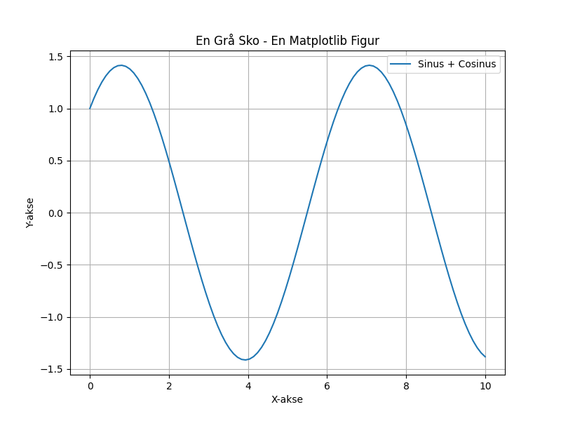

En grå sko, stående der, på en benk av sol og ler. Den har sett storm og stillhet, en historie, nesten tapt, helt. Kanskje en drøm, kanskje et steg, en ensom reise, uten fred. En grå sko, stille og kald, en fortelling, aldri fortalt.

import matplotlib.pyplot as plt
import numpy as np
# Generer data for figuren
x = np.linspace(0, 10, 100)
y = np.sin(x) + np.cos(x)
# Lag figuren
plt.figure(figsize=(8, 6))
plt.plot(x, y, label='Sinus + Cosinus')
plt.title('En Grå Sko - En Matplotlib Figur')
plt.xlabel('X-akse')
plt.ylabel('Y-akse')
plt.grid(True)
plt.legend()
# Lagre figuren
plt.savefig(output_path)execution_ok=True fallback_used=False image_ok=True